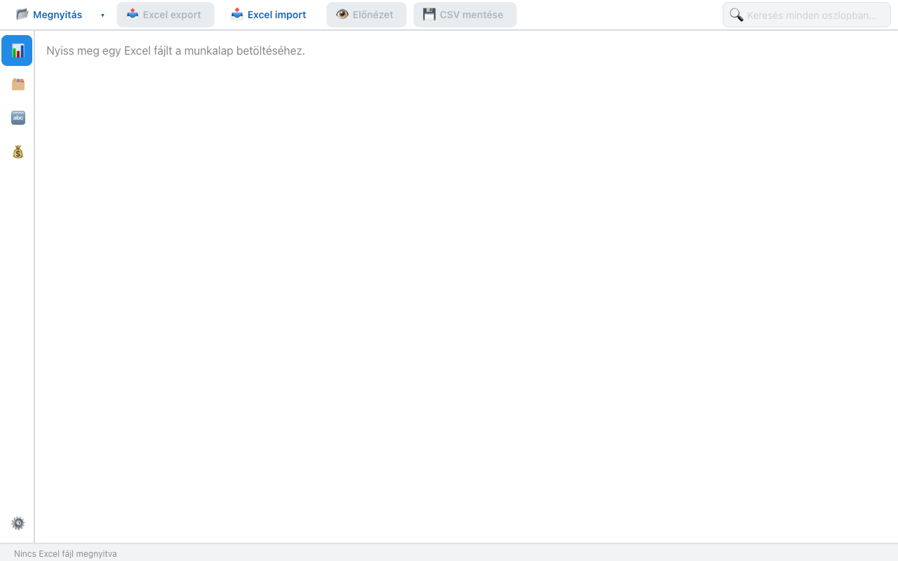
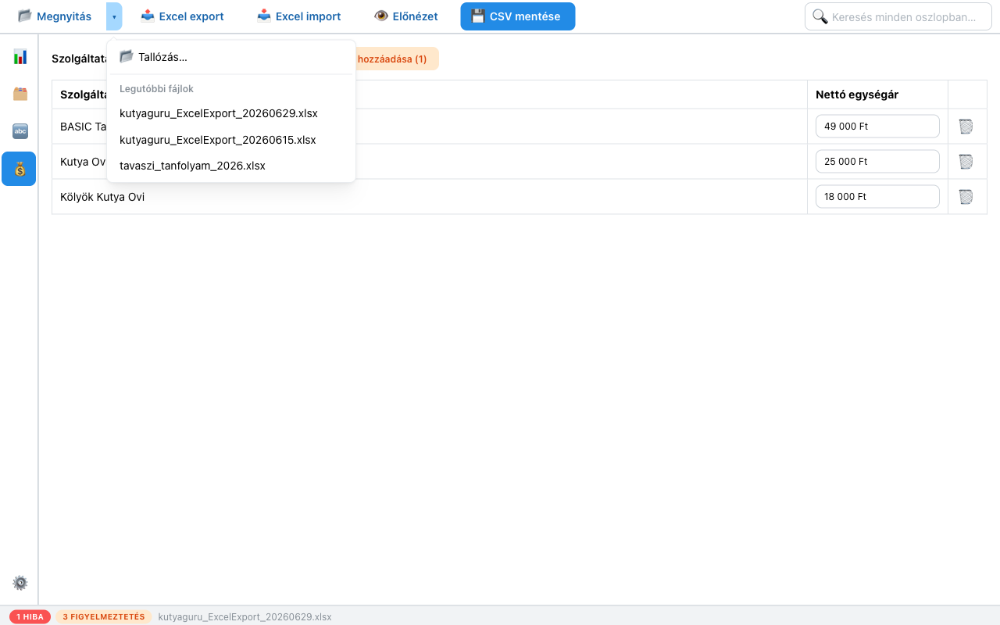
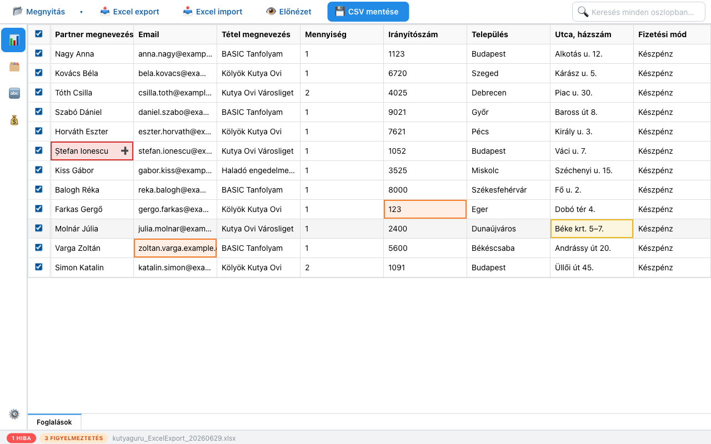
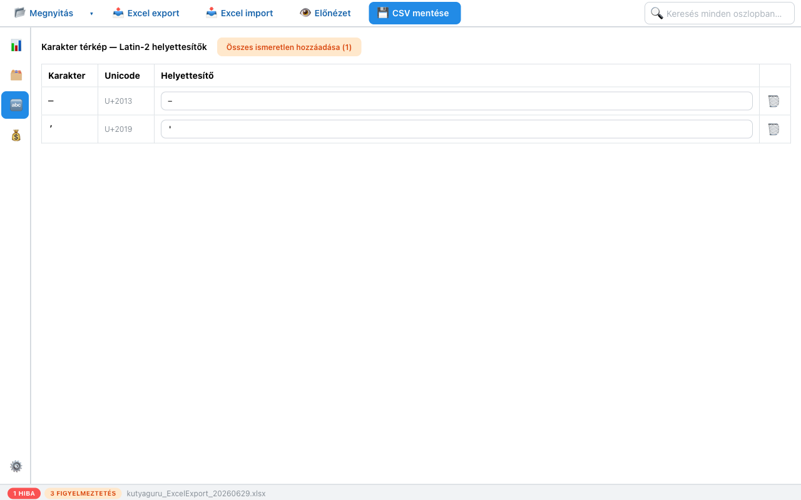
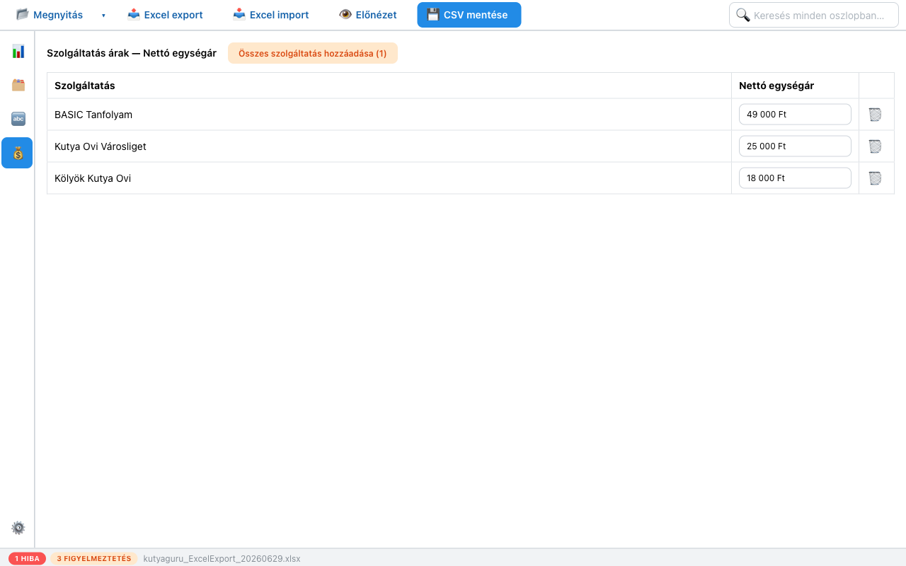
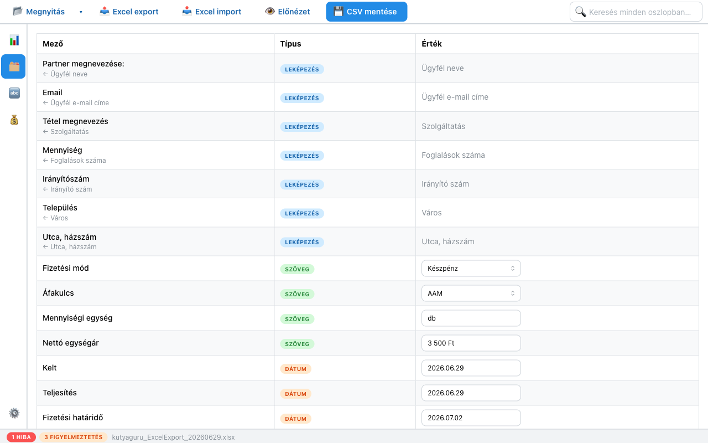
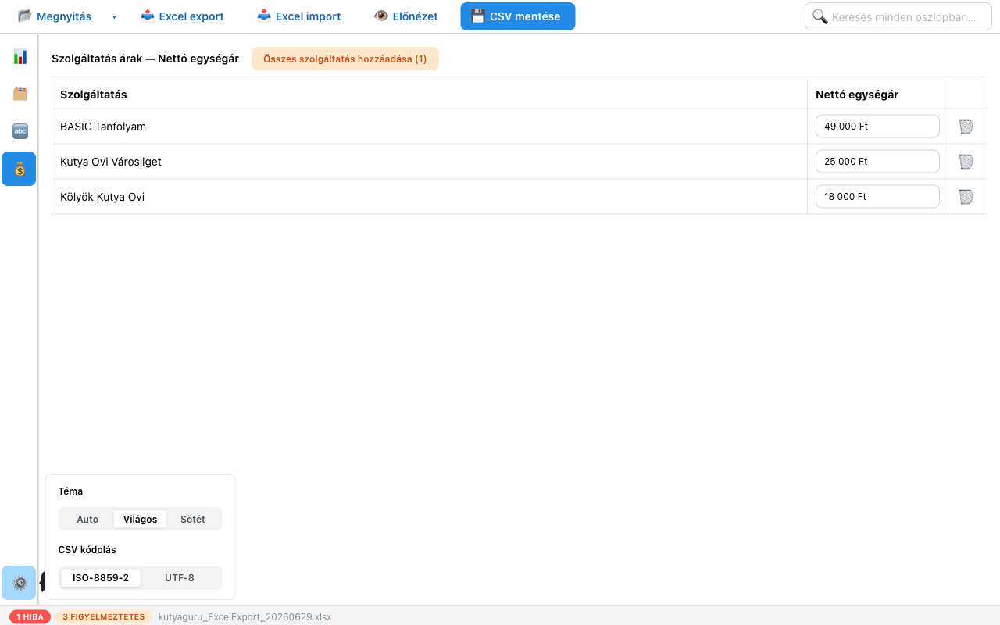
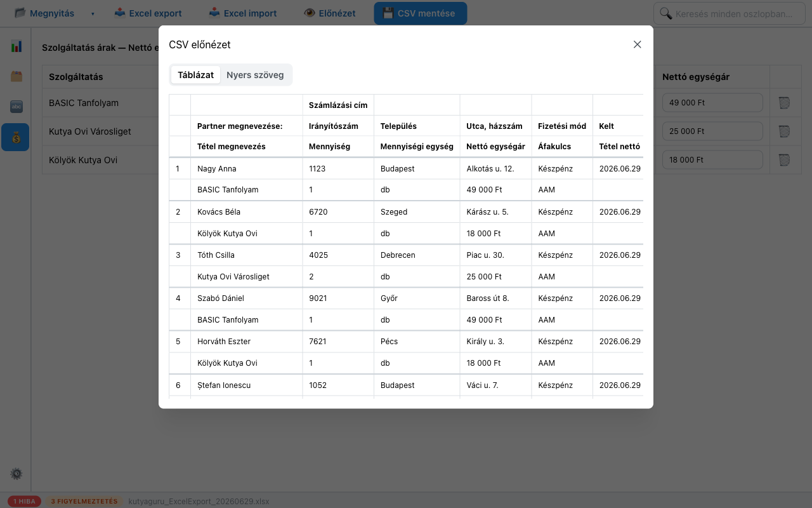

Áttekintés
A program megnyitásakor egy üres munkaterület fogad. Töltsd be a Booked4us Excel-fájlt a 📂 Megnyitás gombbal a bal felső sarokban.

Az ablak három fő részből áll:
- Felső eszköztár — fájlműveletek: megnyitás, Excel export/import, előnézet, CSV mentése, valamint a jobb oldali szabadszavas kereső.
- Bal oldali ikonsáv — öt nézet között vált: 📊 Adatok, 🗂 Mezők, 🔤 Leképezés, 💰 Árak és a ⚙️ Beállítások.
- Alsó állapotsor — a megnyitott fájl neve, valamint a talált hibák és figyelmeztetések száma.
A tipikus munkamenet: megnyitás → adatok ellenőrzése → hibák javítása → árak és mezők beállítása → előnézet → mentés. A következő fejezetek ezt a sorrendet követik.
Fájl megnyitása
Kattints a 📂 Megnyitás gombra, és válaszd ki a Booked4us rendszerből letöltött .xlsx fájlt. A program betölti az első munkalapot, és rögtön megjeleníti az adatokat.
A már korábban használt fájlokat gyorsan újra megnyithatod: kattints a Megnyitás gomb melletti kis ▾ nyílra, és válassz a Legutóbbi fájlok listából. A Tallózás… ponttal a szokásos fájlválasztó nyílik meg.

TippHa egy táblában több munkalap van, a nézet alján megjelenő munkalap-füleken válthatsz közöttük.
Adatok ellenőrzése
Az 📊 Adatok nézet a betöltött táblázatot mutatja már a számlázási oszlopokra leképezve. Minden sor egy foglalás (leendő számlatétel). A program a betöltéskor automatikusan ellenőrzi az összes cellát, és színekkel jelzi a problémákat.

Amit itt megtehetsz:
- Cella szerkesztése — kattints egy cellába, és írd át az értéket. A módosítás azonnal újraellenőrződik.
- Sor ki-/bekapcsolása — a bal szélső jelölőnégyzettel. A kikapcsolt (pipa nélküli) sorok nem kerülnek a CSV-be. A fejlécben lévő négyzettel az összeset egyszerre kapcsolhatod.
- Keresés — a jobb felső 🔍 Keresés minden oszlopban… mezővel szűrhetsz a táblában.
A cellák színének pontos jelentését a következő fejezet írja le.
Színkódok jelentése
A cellák háromféle színt kaphatnak. A leglényegesebb különbség: a piros blokkolja a mentést, a sárga és a narancs viszont nem.
Nem kódolható karakter. A cellában olyan karakter van, amely a kiválasztott kódolásban (alapból ISO-8859-2) nem ábrázolható, és nincs is hozzá helyettesítő megadva.
Amíg egy bekapcsolt sorban piros cella van, a 💾 CSV mentése nem futtatható le. Lásd a Hibák javítása fejezetet.
Exportkor automatikusan lecserélődik. A karakterhez van
megadva helyettesítő a Leképezés táblában (pl. – → -).
Ez nem hiba: a mentés simán lefut, a fájlba a helyettesített változat kerül.
Tartalmi figyelmeztetés. Az érték gyanús, de nem blokkol. Például: hiányzó vagy érvénytelen e-mail cím, nem négyjegyű irányítószám, érvénytelen mennyiség, vagy olyan szolgáltatás, amelyhez nincs ár megadva.
Érdemes átnézni, de a mentést nem akadályozza.
FontosAz állapotsor hiba- és figyelmeztetés-számlálója csak a bekapcsolt sorokat veszi figyelembe. Egy kikapcsolt sor problémái nem számítanak, és nem is akadályozzák a mentést.
Hibák javítása
Egy piros (nem kódolható) cellát háromféleképpen szüntethetsz meg:
- Javítsd ki a cellát az Adatok nézetben — írd át a problémás karaktert egy megengedettre.
- Vegyél fel helyettesítőt a Leképezés táblába. Ekkor a piros cella sárgává válik, és a karakter exportkor automatikusan lecserélődik.
- Kapcsold ki a sort a bal oldali jelölőnégyzettel, ha az a foglalás egyáltalán nem kell a számlázási fájlba.
A Leképezés nézet
A 🔤 Leképezés nézetben adhatod meg, mely különleges karaktereket mire cserélje a program exportkor. A cím a használt kódolásra utal: Latin-2 helyettesítők.

A cím melletti Összes ismeretlen hozzáadása gomb egyetlen kattintással felveszi az összes olyan karaktert, amely jelenleg piros hibát okoz — a zárójelben látod, hányat. Ezután már csak a helyettesítőket kell kitöltened.
TippAz Adatok nézetben egy piros cellára állva a ＋ gombbal is gyorsan felveheted az adott karaktert a Leképezés táblába.
Árak beállítása
A 💰 Árak nézetben szolgáltatásonként adhatsz meg nettó egységárat. A program minden sorhoz a saját szolgáltatásának megfelelő árat írja be, így nem kell egyesével javítgatnod a táblát.

Az Összes szolgáltatás hozzáadása gomb egy kattintással felveszi a listába az összes olyan szolgáltatást, amelynek még nincs ára (a zárójelben a darabszám). Az egyes árakat a mezőbe írva módosíthatod, a 🗑 gombbal törölheted.
Mezők testreszabása
A 🗂 Mezők nézet mutatja, hogyan épül fel a kimeneti számlázási tábla minden egyes oszlopa. Háromféle mezőtípus van:

- LEKÉPEZÉS — az érték a forrásfájl egy oszlopából jön (a név alatt a nyíl mutatja, melyikből, pl. ← Ügyfél neve). Ezek nem szerkeszthetők itt: közvetlenül a betöltött adatokból származnak.
- SZÖVEG — minden sorra érvényes rögzített érték, amelyet itt állíthatsz be (pl. Fizetési mód, Áfakulcs, alapértelmezett Nettó egységár). Egyes mezők legördülőből választhatók.
- DÁTUM — dátumértékek (Kelt, Teljesítés, Fizetési határidő). Ezek indításkor a mai naphoz igazodnak, de felülírhatók.
Egy SZÖVEG vagy DÁTUM mező módosítása azonnal átvezetődik a tábla összes során.
Beállítások
A bal alsó ⚙️ gombbal nyílik meg a beállítások panel. Két dolgot állíthatsz itt:

- Téma — Auto (a rendszerhez igazodik), Világos vagy Sötét megjelenés.
- CSV kódolás — a mentett fájl karakterkódolása.
Melyik kódolást válasszam?
| ISO-8859-2 (alapértelmezett) | UTF-8 |
|---|---|
| A Számlázz.hu által elvárt közép-európai (Latin-2) kódolás. A magyar ékezetes betűket (á, é, í, ó, ö, ő, ú, ü, ű) helyesen tartalmazza. | Univerzális kódolás, amely minden karaktert ismer. Csak akkor válaszd, ha a fogadó rendszer kifejezetten ezt kéri. |
| Néhány karakter — pl. egyes külföldi (román, horvát) betűk, vagy Wordből bemásolt „intelligens” idézőjelek és gondolatjelek — nem fér bele, ezért piros hibát vagy sárga helyettesítést kapnak. | Ilyenkor a karakterhibák eltűnnek, mert az UTF-8 mindent ábrázol — de a fájl csak akkor jó, ha a másik oldal is UTF-8-at vár. |
PéldaA Ștefan Ionescu névben szereplő
Ș (vesszős, román betű) ISO-8859-2-ben nem kódolható → piros hiba.
Megoldás: vegyél fel hozzá helyettesítőt a Leképezésben (pl. Ș → S),
javítsd a nevet, vagy — ha a fogadó rendszer engedi — válts UTF-8 kódolásra.
Előnézet és mentés
Mentés előtt érdemes megnézni, pontosan hogyan fog kinézni a fájl. Kattints a 👁 Előnézet gombra.

Az előnézet tetején a Táblázat és Nyers szöveg nézet között válthatsz — utóbbi a fájl pontos, karakterhű tartalmát mutatja.
Ha minden rendben, mentsd el a fájlokat:
- 💾 CSV mentése — elkészíti a Számlázz.hu-ba feltölthető CSV-fájlt a beállított kódolással. Bekapcsolt sorban lévő piros hiba esetén nem fut le — előbb javítsd a hibát.
- 📤 Excel export — a jelenlegi munkaállapotot menti xlsx-be (a be-/kikapcsolt sorokkal együtt), hogy később folytathasd.
- 📥 Excel import — egy korábban exportált munkafájlt tölt vissza.
TippAz Excel export/import a saját munkádhoz való (mentés és folytatás). A Számlázz.hu-ba mindig a CSV mentése eredményét töltsd fel.
Hibaelhárítás
Nem tudom elmenteni a CSV-t.
Valamelyik bekapcsolt sorban piros (nem kódolható) cella van. Keresd meg a piros cellát az Adatok nézetben, majd javítsd az értéket, vegyél fel hozzá helyettesítőt a Leképezésben, vagy kapcsold ki az adott sort. Az állapotsor mutatja, hány hiba van még hátra.
Egy sort nem szeretnék számlázni.
Kapcsold ki a sor bal szélső jelölőnégyzetét. A kikapcsolt sorok nem kerülnek a CSV-be, és a hibáik sem akadályozzák a mentést.
Az ékezetes vagy külföldi betűk hibásak / pirosak.
Ez kódolási kérdés. A magyar ékezetek ISO-8859-2-ben rendben vannak; ha külföldi (pl. román) betű vagy Wordből másolt speciális jel okoz gondot, vegyél fel hozzá helyettesítőt a Leképezésben, vagy — ha a fogadó rendszer engedi — válts UTF-8-ra a Beállításokban.
Egy szolgáltatás rossz árral szerepel.
Nyisd meg az Árak nézetet, és állítsd be a szolgáltatás nettó egységárát. A narancs figyelmeztetés azt jelzi, hogy az adott szolgáltatáshoz nincs külön ár megadva, ezért a Mezők nézetben beállított alapértelmezett egységárat kapja.
A beállításaim eltűntek újraindítás után.
A téma, a kódolás, a helyettesítők és az árak normál esetben megjegyződnek. Ha nem maradnak meg, az eszköz nem tudta elérni a beállítások tárolására szolgáló mappát — ilyenkor az adatok csak az adott munkamenetig élnek.